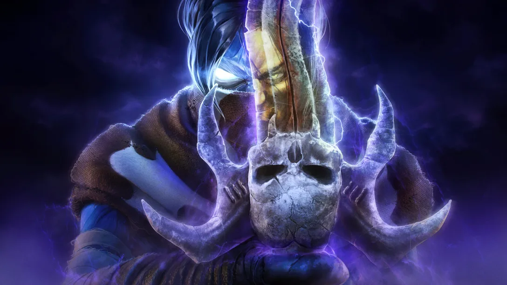
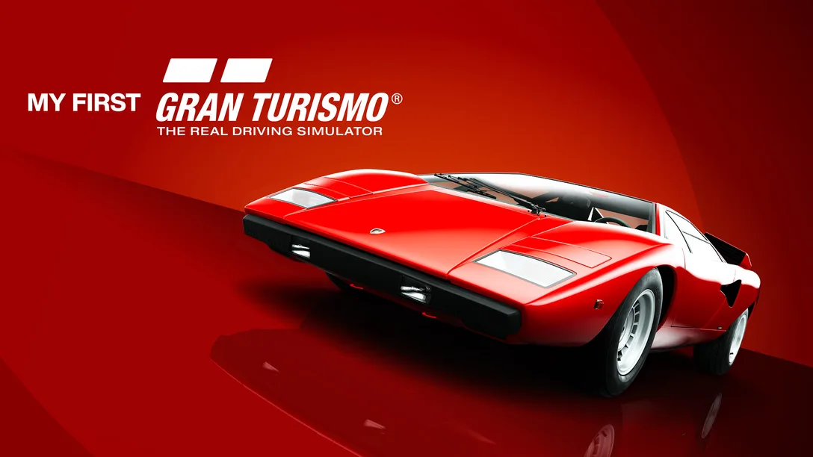
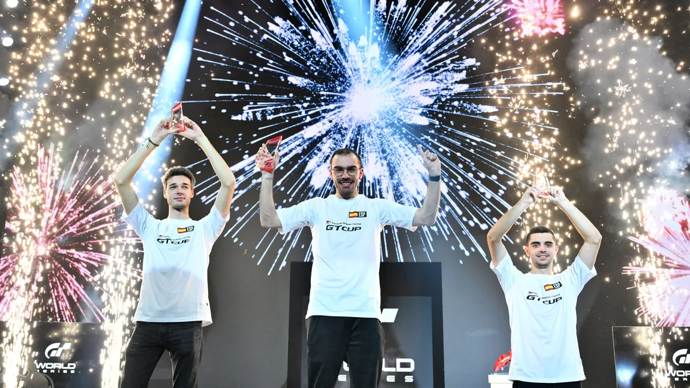
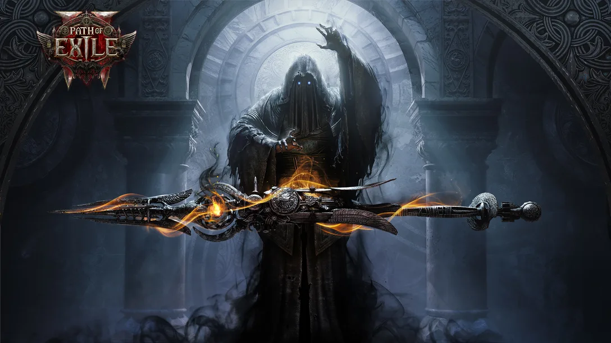
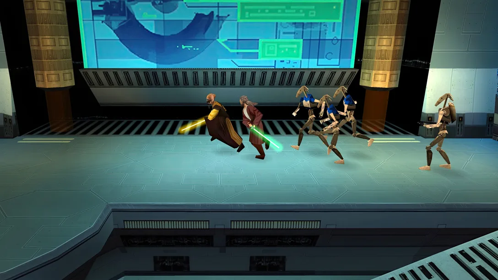

Noticias
Mantente al día con las últimas novedades de PlayStation 5 en nuestro apartado de noticias. Aquí encontrarás anuncios exclusivos, actualizaciones sobre tus juegos favoritos, eventos especiales y todo lo que necesitas saber sobre el mundo PS5. Desde revelaciones de próximos lanzamientos hasta mejoras de software y contenido descargable, este es el lugar ideal para estar siempre informado. No te pierdas ningún detalle y sé el primero en descubrir qué es lo próximo en la evolución del gaming.

Mientras esperamos impacientes la llegada de Legacy of Kain Soul Reaver 1 & 2 Remastered, estamos encantados de poder desenterrar todo un baúl oculto de información sobre el menú de contenido extra que ya dejamos caer anteriormente. Además del nuevo contenido añadido, también hemos recuperado y recreado (en la medida de lo posible) el contenido extra de Soul Reaver 2 en HD, ¡que estará disponible a través del menú! Esto no es solo una edición remasterizada, sino un recordatorio de la colaboración entre Crystal Dynamics, Aspyr y la comunidad de Legacy of Kain.
El contenido extra hace honor al legado de esta franquicia legendaria y reaviva la belleza evocadora que los jugadores tanto esperan del mundo de Nosgoth.
Adéntrate en la «Historia de Nosgoth», donde encontrarás mapas nuevos decorados con descripciones poéticas de lugares y acontecimientos. Creados en colaboración con los líderes de la comunidad de seguidores de Legacy of Kain, miembros clave de la comunidad y artistas de Crystal Dynamics, estos mapas ofrecen una perspectiva integrada de las populares, pero previamente inconexas, zonas de Nosgoth. Cambia entre las versiones purificada y corrupta del mapa para comprobar cómo ha cambiado el mundo con el paso del tiempo y descubrir secretos esparcidos por todo el mapa.
¡Hola a todos! Soy Nobuo Uematsu, el compositor de Fantasian Neo Dimension. La primera vez que el productor Hironobu Sakaguchi se puso en contacto conmigo para hablar de Fantasian, tomé la decisión de que este sería el último videojuego en el que compondría toda la banda sonora exclusivamente por mi cuenta.
Y, como mi último proyecto integral de banda sonora, quería poner toda la carne en el asador. Renové mi oficina, llena de artículos decorativos no relacionados con el trabajo, y la convertí en lo que denominé como «Modo Fantasian», un lugar donde refugiarme y fomentar la creatividad. Al final, me sumergí de lleno en la composición durante varios meses, de lo que no me arrepiento para nada. Espero que disfrutéis de Fantasian Neo Dimension, ¡el trabajo culminante que pone la guinda al pastel que son mis más de 30 años de trayectoria como compositor de bandas sonoras de videojuegos!

Con motivo del 30 aniversario de PlayStation, me enorgullece presentaros My First Gran Turismo, un juego Free to Play que os invitará al emocionante mundo del motor. Esta experiencia ocupa un lugar especial en mi corazón, pues rinde homenaje a los orígenes del primer Gran Turismo, que presentó a toda una generación de jugadores la diversión de la conducción. Ya sea para divertir a los niños en su primera experiencia de carreras o para reavivar una pasión olvidada, My First Gran Turismo se ha diseñado para ser tan accesible como envolvente para todos los jugadores, sin importar su edad o nivel de habilidad al volante.
My First Gran Turismo estará disponible a través de PlayStation Store el viernes 6 de diciembre a las 12:00 (hora local).
Más que jugar, lo que haréis será embarcaros en un viaje personal por el mundo de la conducción. Nos hemos asegurado de que la experiencia sea intuitiva para que todos puedan ponerse al volante y dominar fundamentos tales como tomar las curvas, frenar y acelerar. Los jugadores irán cogiendo confianza a cada vuelta que den, y afrontarán nuevos desafíos que servirán para pulir sus habilidades de conducción.

¡Los pilotos españoles han vuelto a hacer historia en una nueva edición de las finales mundiales de las Gran Turismo World Series! Las finales han dejado a Coque López como campeón en la Manufacturers Cup con Lexus y a José Serrano como ganador de la TOYOTA GAZOO Racing GT Cup en un podio completamente español. Por su parte, el japonés Takuma Miyazono se ha convertido en el Campeón del Mundo de la Nations Cup, título que revalida cuatro años después del logrado en 2020.
La gran final se disputó en el mítico circuito de Le Mans con el hypercar GR010 en una combinación en la que la estrategia de neumáticos y combustible sería clave con un clima cambiante. Tras una gran batalla en la que en todo momento los españoles se mantuvieron en los primeros puestos, la victoria fue para José Serrano, a quien acompañaron en el podio Pol Urra y Coque López. También destacó la actuación de Álex López, que terminó con un meritorio quinto puesto.

Explora el reino tenebroso y perverso de Wraeclast con el acceso anticipado de Path of Exile 2 que llega hoy a PS5. Con grandes sistemas de final de juego, una progresión de habilidades y estilo de combate y nuevas ascendencias, entre muchas otras mecánicas, no te faltarán motivos para seguir explorando y descubriendo cosas. Los jugadores disponen de seis clases de personajes, todos ellos exiliados por diversos motivos.
Controla legiones de muertos desde la distancia, o empuña un martillo, un arco o artillería. Tienes seis clases entre las que elegir, todas ellas listas para dar guerra:
Monje: Rápido y letal, una ráfaga de movimiento que tan solo dejará cadáveres por su paso.
Hechicera: Experta en el arte de la destrucción, conjura hechizos que desgarran a los enemigos y abrasan la propia tierra.
Guerrero: Pura fuerza bruta, utiliza armas letales con una eficacia brutal que destrozará a los enemigos con una fuerza desgarradora.
Explorador: Silencioso, rápido y letal, un cazador entre las sombras que ataca con una precisión letal.
Mercenario: Con arco en mano, estará listo para causar caos a larga distancia, una fuerza implacable de destrucción calculada.
Bruja: Una hechicera de artes oscuras que controla a los secuaces del abismo, subordinándolos a su antojo a medida que destruyen todo lo que encuentran por su paso.
Con el nuevo sistema de Uncut Gems, tu poder no conocerá límites. Desbloquea el amplio abanico de habilidades, combinando Support Gems que transformarán las habilidades y harán que sean más rápidas, letales y destructivas en función de tu estilo de juego.

El próximo lanzamiento de Star Wars: Episodio I: Jedi Power Battles llega a PS4 y PS5 el 23 de enero y estamos encantados de poder presentar la nueva función de cambio de color de la espada láser. Esta actualización permite cambiar entre los colores clásicos de la espada láser del juego original y personalizarlas con colores que se ajustan a todo lo que has podido ver a lo largo y ancho de la galaxia de Star Wars, ya sea en libros, películas o series de televisión.
Por primera vez, Mace Windu podrá blandir su legendaria espada láser lila en Jedi Power Battles, que ya ha tenido apariciones en películas de Star Wars y más allá. En una galaxia repleta de retos que superar, cada cambio de color aporta un toque único a tus peleas con espadas láser.
Esta nueva función proporciona incluso más formas de personalizar la experiencia de tu partida, con personajes como Adi Gallia, Plo Koon y Ki-Adi-Mundi. Prepárate para luchar con tus personajes, ¡y ahora también con tu propio color de espada láser!